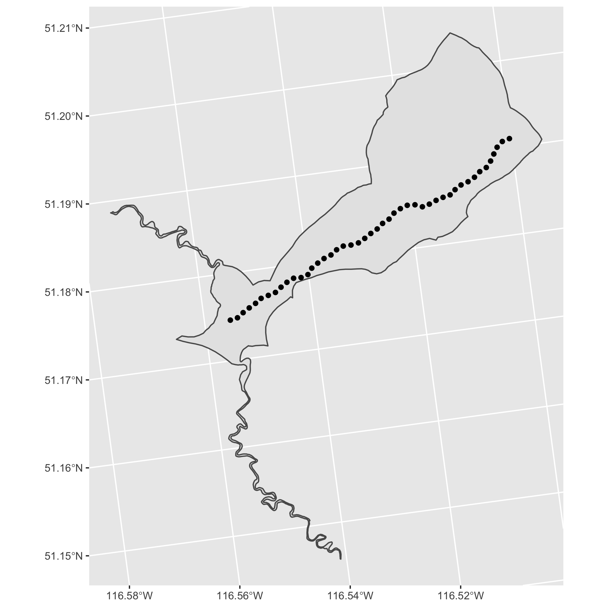

fwatlasbc is an R package for querying data from the Freshwater Atlas (FWA) of British Columbia. Spatial data are returned as simple features.
fwatlasbc wraps fwapgr an R package that uses the fwapg API.
Installation
You can install the latest version of fwatlasbc from GitHub with:
# install.packages("devtools")
devtools::install_github("poissonconsulting/fwatlasbc")Demonstration
Find stream names using regular expression.
library(fwatlasbc)
streams <- fwa_find_stream_names("steep c")
streams
#> # A tibble: 2 × 1
#> stream_name
#> <chr>
#> 1 Steep Canyon Creek
#> 2 Steep CreekAdd blue line keys to stream names.
streams <- fwa_add_blks_to_stream_name(streams)
streams
#> # A tibble: 4 × 2
#> stream_name blk
#> <chr> <int>
#> 1 Steep Canyon Creek 360883036
#> 2 Steep Creek 356362258
#> 3 Steep Creek 356534225
#> 4 Steep Creek 356570155
streams <- streams[streams$blk == 356534225,]Get river meters (every 100 m).
rm <- fwa_add_rms_to_blk(streams, interval = 100)
rm
#> Simple feature collection with 46 features and 4 fields
#> Geometry type: POINT
#> Dimension: XY
#> Bounding box: xmin: 1657747 ymin: 728476.5 xmax: 1661313 ymax: 730795.9
#> Projected CRS: NAD83 / BC Albers
#> # A tibble: 46 × 5
#> stream_name blk rm elevation geometry
#> <chr> <int> <int> <dbl> <POINT [m]>
#> 1 Steep Creek 356534225 0 1087 (1657747 728476.5)
#> 2 Steep Creek 356534225 100 1094. (1657839 728506.7)
#> 3 Steep Creek 356534225 200 1102. (1657911 728572.2)
#> 4 Steep Creek 356534225 300 1111. (1657989 728633.1)
#> 5 Steep Creek 356534225 400 1124. (1658070 728691)
#> 6 Steep Creek 356534225 500 1133. (1658141 728754.7)
#> 7 Steep Creek 356534225 600 1145. (1658233 728792.8)
#> 8 Steep Creek 356534225 700 1154. (1658324 728830.6)
#> 9 Steep Creek 356534225 800 1168. (1658395 728897.5)
#> 10 Steep Creek 356534225 900 1181. (1658470 728960.1)
#> # … with 36 more rowsOr get a blue line key and river meter from longitude and latitude.
fwa_add_rm_to_lon_lat(data.frame(lon = -132.26, lat = 53.36))
#> Simple feature collection with 1 feature and 5 fields
#> Geometry type: POINT
#> Dimension: XY
#> Bounding box: xmin: 585153.6 ymin: 946162.9 xmax: 585153.6 ymax: 946162.9
#> Projected CRS: NAD83 / BC Albers
#> # A tibble: 1 × 6
#> lon lat blk rm distance_to_lon_lat geometry
#> <dbl> <dbl> <int> <dbl> <dbl> <POINT [m]>
#> 1 -132. 53.4 360824839 1118. 508. (585153.6 946162.9)Get watershed.
wshed <- fwa_add_watershed_to_blk(streams)
wshed
#> Simple feature collection with 1 feature and 2 fields
#> Geometry type: POLYGON
#> Dimension: XY
#> Bounding box: xmin: 1656218 ymin: 725423.1 xmax: 1661726 ymax: 732146.2
#> Projected CRS: NAD83 / BC Albers
#> # A tibble: 1 × 3
#> stream_name blk geometry
#> <chr> <int> <POLYGON [m]>
#> 1 Steep Creek 356534225 ((1658037 728924.8, 1658107 728964.9, 1658107 728964.9,…Plot watershed and river meters.
ggplot2::ggplot() +
ggplot2::geom_sf(data = wshed) +
ggplot2::geom_sf(data = rm)
Creditation
fwatlasbc relies on fwapg API which is created, maintained and hosted by Simon Norris at Hillcrest Geographics.
Contribution
Please report any issues.
Pull requests are always welcome.
Code of Conduct
Please note that fwatlasbc is released with a Contributor Code of Conduct. By contributing to this project, you agree to abide by its terms.